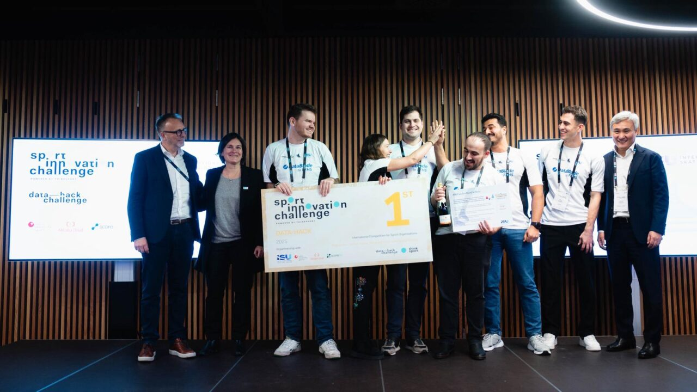
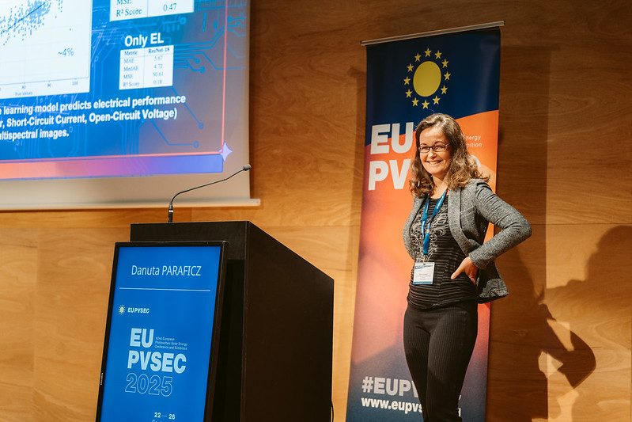
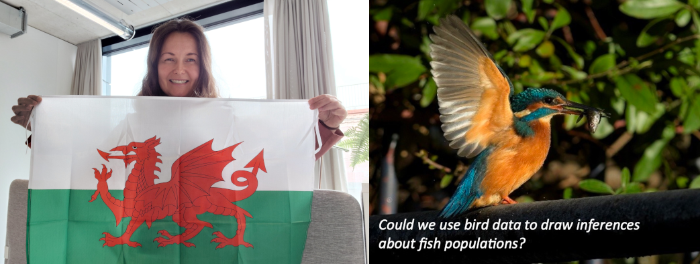

Professional Bio
Dr. Danuta (Danka) Paraficz is a Senior AI Scientist at Fernfachhochschule Schweiz (FFHS), where she develops advanced machine learning and deep learning solutions for real-world challenges.
Her career bridges industrial data science and scientific research. In the energy sector, she developed forecasting models based on satellite and meteorological data to predict wind and solar production across Europe, including probabilistic forecasting workflows for operational decision support.
In astrophysics research, she worked on gravitational lensing and dark matter in international collaborations, combining high-performance computing, advanced statistics, and domain-specific modeling.
Danuta holds a PhD in Astronomy and Astrophysics from the University of Copenhagen (Niels Bohr Institute), with research focused on strong gravitational lensing and dark matter measurement. Her profile combines scientific depth with applied AI implementation.
Dr. Danuta (Danka) Paraficz ist Senior AI Scientist an der Fernfachhochschule Schweiz (FFHS), wo sie fortgeschrittene Machine-Learning- und Deep-Learning-Lösungen für reale Herausforderungen entwickelt.
Ihre Laufbahn verbindet industrielle Data Science mit wissenschaftlicher Forschung. Im Energiesektor entwickelte sie Prognosemodelle auf Basis von Satelliten- und Wetterdaten zur Vorhersage von Wind- und Solarproduktion in Europa, einschließlich probabilistischer Forecasting-Workflows für operative Entscheidungen.
In der Astrophysik arbeitete sie in internationalen Kooperationen zu Gravitationslinsen und Dunkler Materie und verband dabei High-Performance-Computing, fortgeschrittene Statistik und domänenspezifische Modellierung.
Danuta promovierte in Astronomie und Astrophysik an der Universität Kopenhagen (Niels-Bohr-Institut) mit einem Forschungsschwerpunkt auf starker Gravitationslinsenwirkung und der Messung Dunkler Materie. Ihr Profil verbindet wissenschaftliche Tiefe mit praxisnaher KI-Umsetzung.

Telefon
+41 44 512 09 14
E-Mail
danuta.paraficz(at)ffhs.ch
Arbeitsort
Zurich
Arbeitstage
Mo Di Mi Do Fr
Latest Achievement
Milano-Cortina 2026 Olympic Hackathon Winner
Dr. Paraficz led an elite team of FFHS students to victory in the official Olympic App Challenge. The team developed a groundbreaking AI solution for the 2026 Winter Olympics in Milano. Official Announcement

Research Portfolio
Project EAGLE
Renewable Energy Reliability
Deep learning approach to photovoltaics diagnostics via multi-spectral imaging.

BirdNet
Eco-Acoustics
Deep sound classification for biodiversity monitoring in alpine regions.

RAG for N.O.T.
NLP / Space Science
AI retrieval systems for technical documentation at the Nordic Optical Telescope.

Holzbau AI
Industry 4.0 / Vision
Agentic-RAG assistant for timber construction and architecture knowledge.